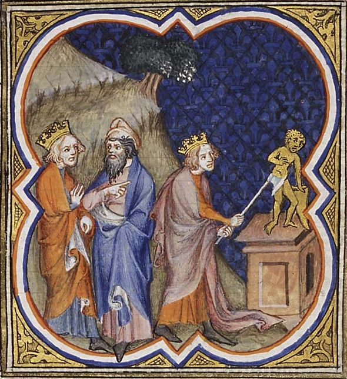

1 Reyes 15 — La Traducción Mister

1 Reyes 15:12–13. El título es el del archivo. Los versículos dicen que Asa quitó los ídolos y cortó el horror de Maaca y lo quemó, y no dicen qué aspecto tenía ninguno. El altar, la colina y las dos figuras de la izquierda son cosa del iluminador.

Notas del traductor — versículo por versículo
Dos relojes. «En el año dieciocho del rey Jeroboam»: de aquí en adelante Reyes fecha a cada rey por el reinado del rey del otro lado de la frontera, y los dos reinos que no comparten templo comparten calendario. Abiam recibe ocho versículos, y tres de ellos son sobre David. El nombre de su madre sale en el segundo versículo y tiene su propio problema, que se trata en el versículo 13. La TNM 1987 imprime «la nieta de Abisalom», donde el hebreo tiene bat, «hija». La RV60 dice «hija de Abisalom». La grafía Abishalom está en dos versículos de la Biblia hebrea, aquí y en el versículo 10. Crónicas tiene a Maaca hija de Absalón (2 Crónicas 11:20), y luego, para la madre del mismo rey, a Micaía hija de Uriel de Gabaa (2 Crónicas 13:2).
La lámpara. «Su corazón no fue íntegro con Jehová su Dios, como el corazón de David su padre»: es la sentencia sobre Salomón (1 Reyes 11:4, ya en estas páginas), y la palabra es shalem. «Jehová su Dios le dio una lámpara en Jerusalén»: nir, la promesa de 1 Reyes 11:36 (ya en estas páginas). Un mal rey sigue en el trono por causa de su bisabuelo, y el versículo lo dice. La Biblia griega de la tradición del Vaticano tiene aquí «un remanente». La RV60 dice «lámpara», y la TNM 1987 «una lámpara».
«Solo en el asunto de Urías el hitita». La cláusula está en un versículo de la Biblia hebrea. Es la única excepción que Reyes admite en el historial de David, y nombra al hombre y no a la mujer (2 Samuel 11:3, ya en estas páginas). El censo de 2 Samuel 24 (ya en estas páginas) no se menciona. La Biblia griega de la tradición del Vaticano se detiene en «todos los días de su vida» y no tiene ninguna excepción. Las lecturas difieren. La RV60 dice «salvo en lo tocante a Urías heteo», y la TNM 1987 «excepto en el asunto de Urías el hitita».
Un versículo fuera de lugar. «Y hubo guerra entre Roboam y Jeroboam todos los días de su vida»: es 1 Reyes 14:30 (ya en estas páginas) otra vez, en medio del reinado de Abiam, y el lector no sabe de qué vida se trata. El versículo siguiente lo dice bien, «entre Abiam y Jeroboam». La Biblia griega de la tradición del Vaticano no tiene versículo 6. La NVI imprime «Durante toda la vida de Abías» y «entre la casa de Roboán y la de Jeroboán», que no es el hebreo impreso aquí. Esta página mantiene «Roboam», con la RV60. Reyes da a la guerra de Abiam una cláusula. Crónicas le da casi un capítulo, con cuatrocientos mil hombres contra ochocientos mil (2 Crónicas 13).
«Como David su padre». Asa es el primer rey desde David de quien se dice que hizo lo recto. «En el año veinte de Jeroboam»: un rey que empezó en el año dieciocho y reinó tres años terminó en el veinte, así que las partes de año se cuentan como años. La Biblia griega de la tradición del Vaticano tiene el año veinticuatro. La lista de Mateo escribe el nombre «Asaf» (véase la nota de Mateo 1:7, ya en estas páginas).
⚠ Los hombres consagrados. «Sacó de la tierra a los hombres consagrados»: son los qedeshim, plural del «hombre consagrado» de 1 Reyes 14:24 (ya en estas páginas). El verbo significa que los hizo pasar fuera. La RV 1909 y la RV60 dicen «sodomitas», la NVI «los que practicaban la prostitución sagrada», y la TNM 1987 «prostitutos de templo». La palabra «sodomitas» se ha leído como una condena de los hombres que tienen relaciones con hombres, como dice la nota de 1 Reyes 14:24. El hebreo dice que un rey sacó de su país a una clase de servidores de santuario.
«Ídolos». «Todos los ídolos que sus padres habían hecho»: es el primer uso en Reyes de gillulim, la palabra plantada junto al estiércol de 1 Reyes 14:10 (ya en estas páginas). Esta página dice «ídolos», como en Levítico 26:30 y Deuteronomio 29:16 (ambos ya en estas páginas). La TNM 1987 dice «ídolos estercolizos», la RV 1909 «suciedades», y la RV60 y la NVI «ídolos». Derivar la palabra del estiércol es una explicación, y antigua, pero el origen de la palabra no es seguro.
Su madre. «Y aun a Maaca su madre»: el versículo 8 hace a Asa hijo de Abiam, el versículo 2 hace a Maaca madre de Abiam, y el versículo 10 la hace madre de Asa. Hay tres salidas. Puede ser su abuela, que conservó su cargo en un segundo reinado, y la NVI y la TNM 1987 imprimen «su abuela»; el hebreo en todos estos versículos tiene immo, «su madre». Abiam y Asa pueden haber sido hermanos. O un nombre puede haberse copiado de una noticia a la otra, y la Biblia griega de la tradición del Vaticano sí da a Asa otra madre, Ana. La RV 1909 y la RV60 mantienen «su madre», y también esta página.
La reina madre y su «horror». «La quitó de ser reina madre»: gevirah, la palabra de Tafnes «la reina» en 1 Reyes 11:19 (ya en estas páginas). Era un cargo, puesto que se podía quitar. «Había hecho un horror para la Aserá»: el sustantivo mifletset está en dos versículos de la Biblia hebrea, aquí y en el paralelo (2 Crónicas 15:16), y viene de un verbo que significa estremecerse. El versículo no dice qué aspecto tenía, y eso ha dejado espacio a las versiones. La RV 1909 dice «un ídolo en un bosque», la RV60 «un ídolo de Asera», la NVI «una imagen repulsiva», la TNM 1987 «un ídolo horrible», y la TNM 2019 «un ídolo obsceno». La Vulgata lo convierte en cosa de Príapo, un dios griego de los huertos del que el hebreo nunca oyó hablar. Asa lo quema junto al torrente Cedrón, donde Josías quemará la Aserá (2 Reyes 23:6).
«No fueron quitados». «Pero los lugares altos no fueron quitados»: la frase está en ocho versículos de la Biblia hebrea, y este es el primero. El verbo es sur, y el capítulo lo ha venido usando: David «no se apartó», Asa «quitó» los ídolos y «quitó» a Maaca. Lo único que el rey bueno no quita es lo que más le importa al libro. Crónicas dice las dos cosas, que los quitó (2 Crónicas 14:2) y que no fueron quitados (2 Crónicas 15:17, ninguno todavía en estas páginas). «Íntegro con Jehová» es la palabra del versículo 3, vuelta del revés. La RV 1909 y la RV60 dicen «perfecto», la TNM 1987 «completo», y la NVI «se mantuvo siempre fiel».
Dones que entran. «Las cosas santas de su padre y sus propias cosas santas»: el rollo escribe qodashav, «sus cosas santas», y la lectura es qodshei, «las cosas santas de». El estante y esta página siguen al rollo. Lleva plata y oro a la casa de Jehová. Dentro de tres versículos los sacará.
Ramá. «Y edificó Ramá, para no dejar salir ni entrar a nadie»: Ramá está a pocas millas al norte de Jerusalén, en el camino. Una fortaleza allí es una mano en la garganta de Judá. «Guerra todos sus días» es el relato de Reyes. Crónicas dice que no hubo guerra hasta el año treinta y cinco de Asa y pone esta campaña en el treinta y seis (2 Crónicas 15:19; 16:1), pero Reyes tiene a Baasa muerto y a su hijo en el trono en el veintiséis (1 Reyes 16:8, ya en estas páginas). Los números no concuerdan tal como están, y las soluciones propuestas son propuestas.
«Que habían quedado». «Toda la plata y el oro que habían quedado»: Sisac «lo tomó todo» (1 Reyes 14:26, ya en estas páginas), y la frase admite que no fue del todo todo. Lo que queda quizá sea lo que Asa acababa de llevar; el texto no lo dice. Así, el templo es despojado por segunda vez, y por un rey bueno. Volverá a pasar con Acaz y con Ezequías (2 Reyes 16:8; 18:15). «La casa del rey»: el rollo escribe «casa de rey» y la lectura añade el artículo.
«Un soborno». «Mira, te he enviado un soborno de plata y oro»: la palabra es shochad, y esta página la mantiene donde el estante no. La RV 1909, la RV60, la NVI y la TNM 1987 dicen «un presente». Es la palabra de la ley, «No aceptarás soborno» (Éxodo 23:8, ya en estas páginas), y de Jehová, que «no toma soborno» (Deuteronomio 10:17, ya en estas páginas). Es también la palabra llana para pagar a un rey por romper su palabra, que es lo que hace Asa, y el pago de Acaz a Asiria lleva el mismo nombre (2 Reyes 16:8). Reyes no comenta. Crónicas sí: un vidente llamado Hanani reprende a Asa y es puesto en prisión por ello (2 Crónicas 16:7–10).
Ben-adad y el camino del norte. «Ben-adad hijo de Tabrimón hijo de Hezión, rey de Aram, que habitaba en Damasco»: tres generaciones de un rey extranjero. Él es el primero de ese nombre, «hijo de Hadad», el dios de la tormenta. Si Hezión es el Rezón de 1 Reyes 11:23 (ya en estas páginas) se ha discutido y no se puede demostrar. La RV60 dice «rey de Siria» por «Aram», y la NVI «rey de Aram». «Rompe tu pacto»: el hombre que acaba de llevar las cosas santas a la casa pide a un rey de Damasco que rompa un tratado, y le paga por ello. Cae Dan (1 Reyes 12:29, ya en estas páginas), la ciudad del becerro, y Abel-bet-maaca, y «toda Cineret». Funciona. Ijón, Abel-bet-maaca y Neftalí son lo que tomará Asiria (2 Reyes 15:29), y buena parte del resto de este libro son guerras con Damasco.
Sin nadie exento. «Sin nadie exento»: las dos palabras ein naqi están en un versículo de la Biblia hebrea. Naqi es la palabra del recién casado que queda «libre» para su casa durante un año (Deuteronomio 24:5, ya en estas páginas). Esta vez van todos. Todo Judá se lleva las piedras y la madera de la fortaleza de Baasa, y Asa edifica dos propias con ellas, Gueba y Mizpa. Los materiales salieron gratis. La cisterna que hizo «por miedo a Baasa» vuelve en Jeremías (Jeremías 41:9).
«Solo». «Solo que, en el tiempo de su vejez, enfermó de los pies»: la palabra es raq, y es la tercera del capítulo. David fue recto, «solo en el asunto de Urías». Los lugares altos se quedaron, «solo el corazón de Asa fue íntegro». Ahora un reinado largo y bueno, «solo» esto. La frase chalah et raglav está en un versículo de la Biblia hebrea, y el texto no dice qué enfermedad era. Todo diagnóstico propuesto desde entonces es una conjetura. Crónicas la fecha en su año treinta y nueve y le reprocha haber acudido a los médicos y no a Jehová (2 Crónicas 16:12). El verbo es el del niño enfermo (1 Reyes 14:1, ya en estas páginas), y un capítulo después de que los pies delataran a la madre de ese niño, el rey de Judá acaba por los suyos.
Cuarenta y un años, y un paso atrás. «Y Josafat su hijo reinó en su lugar»: tendrá que esperar su propia noticia (1 Reyes 22:41). El versículo siguiente vuelve al año segundo de Asa. Reyes termina a un rey antes de retomar al otro, de modo que el lector ya ha enterrado a Asa y seguirá viendo sus años en las fechas del capítulo siguiente.
La primera conspiración. «Baasa hijo de Ahías, de la casa de Isacar, conspiró contra él»: el verbo es qashar, atar, y el sustantivo es qesher. El nombre de su padre es el del profeta, y el texto no los relaciona; este Baasa es de otra tribu. «Reinó sobre Israel dos años» va del año segundo de Asa al tercero, como muestra el versículo 28, de modo que los años se cuentan como en el versículo 9. La primera dinastía del norte termina tras un solo hijo.
Gibetón. «Gibetón, que era de los filisteos»: la ciudad fue asignada a Dan y dada a los levitas (Josué 19:44; 21:23, ya en estas páginas), y está en manos ajenas. El ejército que ve morir aquí a su rey seguirá acampado contra la misma ciudad en el golpe siguiente (1 Reyes 16:15, ya en estas páginas).
«Nada que respirara». «No dejó a Jeroboam nada que respirara, hasta destruirlo»: kol neshamah está en cuatro versículos de la Biblia hebrea. Los otros tres son la prohibición sobre Canaán y la toma de Hazor (Deuteronomio 20:16; Josué 11:11, 14, ya en estas páginas). La casa del rey de Israel es tratada como el libro trató a las ciudades de Canaán. La RV60 dice «sin dejar alma viviente», y la NVI «No dejó vivo a ninguno». «Conforme a la palabra de Jehová»: es la sentencia de 1 Reyes 14:10–14 (ya en estas páginas), y el hombre que la cumplió no la estaba obedeciendo. Jehová lo dijo, Baasa lo hizo por sus propias razones, y también será condenado por ello (1 Reyes 16:7, ya en estas páginas). El texto deja esos dos hechos uno al lado del otro.
Una línea repetida. «Y hubo guerra entre Asa y Baasa rey de Israel todos sus días»: es el versículo 16 palabra por palabra, y «todos sus días» está en dos versículos de la Biblia hebrea, esos dos. La Biblia griega de la tradición del Vaticano no tiene versículo 32. En el hebreo separa el fin de un rey del comienzo de otro.
El camino de Jeroboam. «Y anduvo en el camino de Jeroboam»: Baasa acabó con todo lo que respiraba de la casa de Jeroboam, y dos versículos después el libro le da el veredicto de Jeroboam. Tiene la casa y Tirsa durante veinticuatro años, «sobre todo Israel». La sentencia que cayó sobre la línea de Jeroboam está a punto de dictarse sobre la suya (1 Reyes 16:3, ya en estas páginas).
Patrones que vale la pena llevar adelante
Donde esta traducción mantiene las palabras exactas y distintas: «íntegro con Jehová» para shalem, como en 1 Reyes 11:4; «una lámpara» para nir, como en 1 Reyes 11:36; «solo» para raq, las tres veces; «los hombres consagrados» para qedeshim; «ídolos» para gillulim; «reina madre» para gevirah; «un horror» para mifletset; «quitar» para sur; «un soborno» para shochad, como en Éxodo 23:8; «pacto» para berit, en un tratado entre reyes; «sin nadie exento» para ein naqi; «conspiró» para qashar; «nada que respirara» para kol neshamah; y «su madre», como lo tiene el hebreo, para Maaca.
Ecos pagados. El corazón no íntegro (1 Reyes 11:4); la lámpara (1 Reyes 11:36); Urías el hitita (2 Samuel 11:3); guerra todos los días (1 Reyes 14:30); el hombre consagrado (1 Reyes 14:24); el estiércol y los ídolos (1 Reyes 14:10); Tafnes la gevirah (1 Reyes 11:19); «lo tomó todo» (1 Reyes 14:26); la ley del soborno (Éxodo 23:8; Deuteronomio 10:17); Dan y el becerro (1 Reyes 12:29); el hombre libre para su casa (Deuteronomio 24:5); el niño enfermo (1 Reyes 14:1); Nadab y la sentencia de Ahías (1 Reyes 14:10–14, 20); Gibetón (Josué 19:44; 21:23); y «nada que respirara» (Deuteronomio 20:16; Josué 11:11, 14).
Ecos plantados. La palabra contra Baasa, y otra vez Gibetón (1 Reyes 16:1–4, 7, 15, ya en estas páginas); Josafat (1 Reyes 22:41); Maaca en Crónicas (2 Crónicas 11:20; 13:2; 15:16); la guerra de Abiam (2 Crónicas 13); Hanani y los médicos (2 Crónicas 16:7–12); el soborno de Acaz y el oro de Ezequías (2 Reyes 16:8; 18:15); Asiria en Neftalí (2 Reyes 15:29); Josías en el Cedrón (2 Reyes 23:6); y la cisterna de Asa en Mizpa (Jeremías 41:9). Ninguno está todavía en estas páginas.
Siguiente en este libro: 1 Reyes 16 — Jehú hijo de Hanani da a Baasa la sentencia que él cumplió contra Jeroboam; Ela se emborracha en Tirsa y Zimri lo mata y reina siete días; Omri compra un monte a Semer y edifica Samaria; y Acab llega al trono con Jezabel.